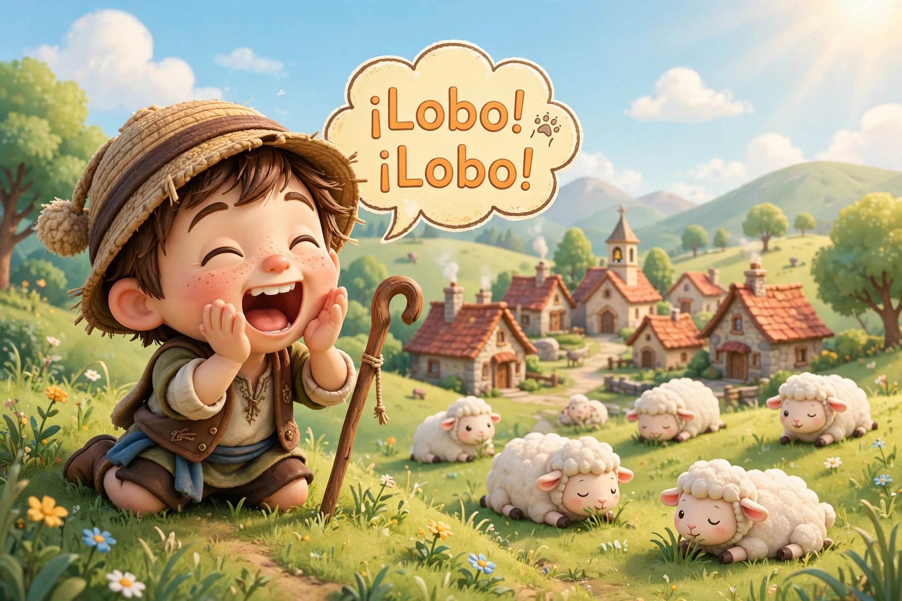

Había una vez un pastorcito que cuidaba su rebaño en la cima de la colina. Él se encontraba muy aburrido y para divertirse se le ocurrió hacerles una broma a los aldeanos. Luego de respirar profundo, el pastorcito gritó: —¡Lobo, lobo! Hay un lobo que persigue las ovejas. Los aldeanos llegaron corriendo para ayudar al pastorcito y ahuyentar al lobo. Pero al llegar a la cima de la colina no encontraron ningún lobo. El pastorcito se echó a reír al ver sus rostros enojados. —No grites lobo, cuando no hay ningún lobo —dijeron los aldeanos y se fueron enojados colina abajo. Luego de unas pocas horas, el pastorcito gritó nuevamente: —¡Lobo, lobo! El lobo está persiguiendo las ovejas. Los aldeanos corrieron nuevamente a auxiliarlo, pero al ver que no había ningún lobo le dijeron al pastorcito con severidad: —No grites lobo cuando no hay ningún lobo, hazlo cuando en realidad un lobo esté persiguiendo las ovejas. Pero el pastorcito seguía revolcándose de la risa mientras veía a los aldeanos bajar la colina una vez más. Más tarde, el pastorcito vio a un lobo cerca de su rebaño. Asustado, gritó tan fuerte como pudo: —¡Lobo, lobo! El lobo persigue las ovejas. Pero los aldeanos pensaron que él estaba tratando de engañarlos de nuevo, y esta vez no acudieron en su ayuda. El pastorcito lloró inconsolablemente mientras veía al lobo huir con todas sus ovejas. Al atardecer, el pastorcito regresó a la aldea y les dijo a todos: —El lobo apareció en la colina y ha escapado con todas mis ovejas. ¿Por qué no quisieron ayudarme? Entonces los aldeanos respondieron: —Te hubiéramos ayudado, así como lo hicimos antes; pero nadie cree en un mentiroso incluso cuando dice la verdad.
Versión de Paola Artmann
Volver al inicio